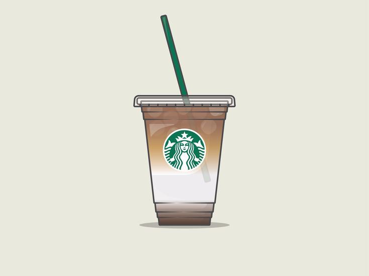

Iced Caramel Macchiato

Description
A popular cold coffee drink that layers coffee, milk, and caramel for a sweet and refreshing treat.
Ingredients
- 1 shot of espresso (or 1/2 cup strong brewed coffee)
- 1 cup milk (whole, almond, or oat milk)
- 1 tbsp caramel sauce
- 1 tsp vanilla syrup (optional)
- Ice cubes
- Extra caramel for drizzle
Steps
- Fill a glass with ice cubes.
- Pour in the milk and stir in the vanilla syrup if you want extra flavor.
- Brew your espresso or strong coffee and let it cool slightly.
- Slowly pour the espresso over the milk to create a layered effect.
- Drizzle caramel sauce on top.
- Stir and enjoy your cool, sweet iced caramel macchiato!
home